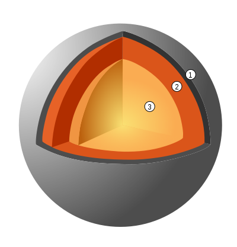

[править | править код]
Материал из Википедии — свободной энциклопедии
У этого термина существуют и другие значения, см. Меркурий (значения).
|
Меркурий | ||||
|
| ||||
|
| ||||
|
Открытие | ||||
|
Первооткрыватель |
неизвестно | |||
|
Орбитальные характеристики[1] | ||||
|
46 001 009 км | ||||
|
69 817 445 км | ||||
|
Большая полуось (a) |
57 909 227 км | |||
|
0,20563593 | ||||
|
Сидерический периодобращения |
87,969 дней[2] | |||
|
Синодический периодобращения |
115,88 дней[2] | |||
|
47,36 км/с (средняя)[2] | ||||
|
Средняя аномалия (Mo) |
174,795884° | |||
|
Наклонение (i) |
7,00° относительно плоскости эклиптики | |||
|
48,33167°[2] | ||||
|
29,124279° | ||||
|
Чей спутник |
||||
|
Спутники |
нет | |||
|
Физические характеристики[1] | ||||
|
Полярное сжатие |
0[2] | |||
|
Экваториальный радиус |
2439,7 км[2] | |||
|
Полярный радиус |
2439,7 км[2] | |||
|
Средний радиус |
2439,7 ± 1,0 км (0,3829 земного)[2] | |||
|
Окружность большого круга |
15 329,1 км | |||
|
Площадь поверхности (S) |
7,48·107 км² | |||
|
Объём (V) |
6,083·1010 км³ | |||
|
Масса (m) |
||||
|
Средняя плотность (ρ) |
5,427 г/см³ | |||
|
Ускорение свободного падения на экваторе (g) |
||||
|
3,1 км/с | ||||
|
4,25 км/с | ||||
|
Экваториальная скорость вращения |
10,892 км/ч (3,026 м/с) (на экваторе) | |||
|
Период вращения (T) |
58,646 дней (1407,5 часов)[2] | |||
|
2,11′ ± 0,1′[6] | ||||
|
Прямое восхождениесеверного полюса (α) |
18 ч 44 мин 2 с | |||
|
Склонение северного полюса (δ) |
61,45°[2] | |||
|
4,5" – 13"[2] | ||||
|
Температура | ||||
|
|
| |||
|
0°N, 0°W[10] |
| |||
|
85°N, 0°W[10] |
| |||
|
~10−15 бар[2] | ||||
|
Состав: 42,0 % кислород | ||||
Мерку́рий — ближайшая к Солнцу планета Солнечной системы[12], наименьшая из планет земной группы. Названа в честь древнеримского бога торговли — быстрого Меркурия, поскольку она движется по небесной сфере быстрее других планет.
[
скрыть]
Общие сведения[править | править код]
Среднее расстояние Меркурия от Солнца чуть меньше 58 млн км (57,91 млн км)[13][14]. Планета обращается вокруг Солнца за 88 земных суток. Видимая звёздная величина Меркурия колеблется от −1,9[2] до 5,5, но его нелегко заметить из-за близости к Солнцу.
Меркурий относится к планетам земной группы. По своим физическим характеристикам Меркурий напоминает Луну. У него нет естественных спутников, но есть очень разреженная атмосфера. Планета обладает крупным железным ядром[15], являющимся источником магнитного поля, напряжённость которого составляет 0,01 от земного магнитного поля[16]. Ядро Меркурия составляет 83 % от всего объёма планеты[17][18]. Температура на поверхности Меркурия колеблется от 80 до 700 К (от −190 до +430 °C). Солнечная сторона нагревается гораздо больше, чем полярные области и обратная сторона планеты.
Сравнительные размеры планет земной группы (слева направо: Меркурий, Венера, Земля, Марс)
Радиус Меркурия составляет всего 2439,7 ± 1,0 км[2], что меньше радиуса спутника ЮпитераГанимеда и спутника Сатурна Титана (двух самых больших спутников планет в солнечной системе). Но несмотря на меньший радиус, Меркурий превосходит Ганимед и Титан по массе. Масса планеты равна 3,3·1023 кг. Средняя плотность Меркурия довольно велика — 5,43 г/см³, что лишь незначительно меньше плотности Земли. Учитывая, что Земля намного больше по размерам, значение плотности Меркурия указывает на повышенное содержание в его недрах металлов. Ускорение свободного падения на Меркурии равно 3,70 м/с²[1]. Вторая космическая скорость — 4,25 км/с[1]. О планете пока известно сравнительно немного. Только в 2009 году учёные составили первую полную карту Меркурия, используя снимки аппаратов «Маринер-10» и «Мессенджер»[19].
После лишения Плутона в 2006 году статуса планеты к Меркурию перешло звание самой маленькой планеты Солнечной системы.
Астрономия[править | править код]
Астрономические характеристики[править | править код]
Видимая звёздная величина Меркурия колеблется от −1,9m до 5,5m[2], но его нелегко заметить по причине небольшого углового расстояния от Солнца (максимум 28,3°)[20].
Наиболее благоприятные условия для наблюдения Меркурия — в низких широтах и вблизи экватора: это связано с тем, что продолжительность сумерек там наименьшая. В средних широтах найти Меркурий гораздо труднее и возможно только в период наилучших элонгаций. В высоких широтах планету практически никогда (за исключением затмений) нельзя увидеть на тёмном ночном небе: Меркурий виден в течение очень небольшого промежутка времени после наступления сумерек[21].
Наиболее благоприятные условия для наблюдения Меркурия в средних широтах обоих полушарий складываются около равноденствий (продолжительность сумерек при этом минимальная). Оптимальным временем для наблюдений планеты являются утренние или вечерние сумерки в периоды его элонгаций (периодов максимального удаления Меркурия от Солнца на небе, наступающих несколько раз в год).
Астрономический символ Меркурия представляет собой стилизованное изображение крылатого шлема бога Меркурия с его кадуцеем.
Небесная механика Меркурия[править | править код]
Меркурий обращается по своей орбите вокруг Солнца с периодом около 88 земных суток. Продолжительность одних звёздных суток на Меркурии составляет 58,65 земных[22], а солнечных — 176 земных[4]. Меркурий движется вокруг Солнца по довольно сильно вытянутой эллиптической орбите (эксцентриситет0,205) на среднем расстоянии 57,91 млн км (0,387 а. е.). В перигелии Меркурий находится в 45,9 млн км от Солнца (0,3 а. е.), в афелии — в 69,7 млн км (0,46 а. е.), таким образом, в перигелии Меркурий более чем в полтора раза ближе к Солнцу, чем в афелии. Наклон орбиты к плоскости эклиптики равен 7°. На один оборот по орбите Меркурий затрачивает 87,97 земных суток. Средняя скорость движения планеты по орбите — 48 км/с. Расстояние от Меркурия до Земли меняется от 82 до 217 млн км[23]. Поэтому при наблюдении с Земли, Меркурий за несколько дней изменяет своё положение относительно Солнца от запада (утренняя видимость) к востоку (вечерняя видимость).
Астрономы долгое время считали, что Меркурий постоянно обращён к Солнцу одной и той же стороной, и один оборот вокруг оси занимает у него те же 87,97 земных суток. Наблюдения деталей на поверхности Меркурия не противоречили этому. Данное заблуждение было связано с тем, что наиболее благоприятные условия для наблюдения Меркурия повторяются через период, примерно равный четырёхкратному периоду вращения Меркурия (352 суток), поэтому в различное время наблюдался приблизительно один и тот же участок поверхности планеты. Истина раскрылась только в середине 1960-х годов, когда была проведена радиолокация Меркурия.
Оказалось, что меркурианские звёздные сутки равны 58,65 земных суток, то есть 2/3 меркурианского года[22]. Такое соотношение периодов вращения вокруг оси и обращения Меркурия вокруг Солнца является уникальным для Солнечной системы явлением. Оно, предположительно, объясняется тем, что приливное воздействие Солнца отбирало момент количества движения и тормозило вращение, которое было первоначально более быстрым, до тех пор, пока оба периода не оказались связаны целочисленным отношением[24]. В результате за один меркурианский год Меркурий успевает повернуться вокруг своей оси на полтора оборота. То есть если в момент прохождения Меркурием перигелия определённая точка его поверхности обращена точно к Солнцу, то при следующем прохождении перигелия к Солнцу будет обращена в точности противоположная точка поверхности, а ещё через один меркурианский год Солнце снова вернётся в зенит над первой точкой. В результате солнечные сутки на Меркурии длятся два меркурианских года или трое меркурианских звёздных суток[4].
В результате такого движения планеты на ней можно выделить «горячие долготы» — два противоположных меридиана, которые попеременно обращены к Солнцу во время прохождения Меркурием перигелия, и на которых из-за этого бывает особенно горячо даже по меркурианским меркам[25].
На Меркурии нет смены времён года, как на Земле. Это происходит из-за того, что ось вращения планеты почти перпендикулярна к плоскости орбиты. Как следствие, рядом с полюсами есть области, которые солнечные лучи не освещают. Исследования, проведённые с помощью радиотелескопа в Аресибо, позволяет предположить, что в этой холодной и тёмной зоне существуют ледники. Слой водяного льда может достигать 2 м; он, вероятно, покрыт слоем пыли[26].
Комбинация осевого и орбитального движений планеты порождает ещё одно интересное явление. Скорость вращения планеты вокруг оси — величина практически постоянная, в то время как скорость орбитального движения постоянно изменяется. На участке орбиты вблизи перигелия в течение примерно 8 суток угловая скорость орбитального движения превышает угловую скорость вращательного движения. В результате Солнце на небосводе Меркурия останавливается и начинает двигаться в обратном направлении — с запада на восток. Этот эффект иногда называют[кто?] эффектом Иисуса Навина, по имени Иисуса Навина, который, согласно Библии, однажды остановил движение Солнца (Нав. 10:12—13). Для наблюдателя на долготах, отстоящих на 90° от «горячих долгот», Солнце при этом восходит (или заходит) дважды.
Интересно также, что, хотя ближайшими по расположению орбит к Земле являются Марс и Венера, Меркурий в среднем чаще[источник не указан 1798 дней]других является ближайшей к Земле планетой (поскольку другие планеты отдаляются в большей степени, не будучи столь «привязанными» к Солнцу).
Основная статья: Прохождение Меркурия по диску Солнца
Прохождение Меркурия по диску Солнца — довольно редкое астрономическое явление, однако, оно случается намного чаще, чем например прохождения Венеры, поскольку Меркурий находится ближе к Солнцу и меркурианский год короче.
Возможно также одновременное прохождение по диску Солнца и Венеры одновременно с Меркурием, но такое событие бывает исключительно редко. Ближайший совместный транзит Венеры и Меркурия будет 26 июля 69 163 года, следующий — в 224 508 году. Предыдущий одновременный транзит был более 350 тысяч лет назад, в 373 173 году до н. э. В 13 425 году н. э. будет транзит Меркурия и Венеры с разницей в 16 часов.
Прохождение Меркурия по диску Солнца 8 ноября 2006 года. Меркурий виден как маленькая точка чуть ниже центра фотографии
Прохождение Меркурия может произойти и в момент солнечного затмения. Подобное крайне редкое совпадение случится 30 мая 6757 года[27].
Продолжительность прохождения Меркурия по диску Солнца обычно длится 5 часов.
7 апреля 2094 года в 10:45 по всемирному времени Меркурий пройдёт по диску Юпитера.
Аномальная прецессия орбиты[править | править код]
Прецессия орбиты Меркурия. Скорость прецессии для наглядности рисунка увеличена по сравнению с действительной
Основная статья: Смещение перигелия Меркурия
Меркурий находится близко к Солнцу, поэтому эффекты общей теории относительности проявляются в его движении в наибольшей мере среди всех планет Солнечной системы. Уже в 1859 году французский математик и астроном Урбен Леверье сообщил, что существует медленная прецессия перигелия Меркурия, которая не может быть полностью объяснена на основе расчёта влияния известных планет согласно ньютоновской механике.
Прецессия перигелия Меркурия составляет 574,10 ± 0,65″ (угловых секунд) за столетие в гелиоцентрической системе координат, или 5600 угловых секунд за столетие в геоцентрической системе координат. Расчёт влияния всех других небесных тел на Меркурий согласно ньютоновской механике даёт прецессию соответственно 531,63 ± 0,69 и 5557 угловых секунд за столетие[28]. Пытаясь объяснить наблюдаемый эффект, Леверье предположил, что существует ещё одна планета (или, возможно, пояс небольших астероидов), орбита которой расположена ближе к Солнцу, чем у Меркурия, и которая вносит возмущающее влияние[29] (другие объяснения рассматривали неучтённое полярное сжатие Солнца). Благодаря ранее достигнутым успехам в поисках Нептуна с учётом его влияния на орбиту Урана данная гипотеза стала популярной, и искомая гипотетическая планета даже получила название — Вулкан. Однако эта планета так и не была обнаружена[30].
Так как ни одно из этих объяснений не выдержало проверки наблюдениями, некоторые физики начали выдвигать более радикальные гипотезы, что необходимо изменять сам закон тяготения, например, менять в нём показатель степени или добавлять в потенциал члены, зависящие от скорости тел[31]. Однако большинство таких попыток оказались противоречивыми. В начале XX века общая теория относительности дала объяснение наблюдаемой прецессии. Эффект очень мал: релятивистская «добавка» составляет всего 42,98 угловой секунды за век, что составляет 1/130 (0,77 %) от общей скорости прецессии, так что потребуется по меньшей мере 12 млн оборотов Меркурия вокруг Солнца, чтобы перигелий вернулся в положение, предсказанное классической теорией. Подобное, но меньшее смещение существует и для других планет — 8,62 угловой секунды за век для Венеры, 3,84 для Земли, 1,35 для Марса, а также астероидов — 10,05 для Икара[32][33].
Планетология[править | править код]
Магнитное поле[править | править код]
Меркурий обладает магнитным полем, напряжённость которого, по результатам измерения «Маринера-10», примерно в 100 раз меньше земного и составляет ~300 нТл[2]. Магнитное поле Меркурия имеет дипольную структуру[34] и в высшей степени симметрично[35], а его ось всего на 10 градусов отклоняется от оси вращения планеты[36], что налагает существенное ограничение на круг теорий, объясняющих его происхождение[35]. Магнитное поле Меркурия, возможно, образуется в результате эффекта динамо, то есть так же, как и на Земле[37][38]. Этот эффект является результатом циркуляции вещества в жидком ядре планеты. Из-за выраженного эксцентриситета орбиты планеты и близости к Солнцу возникает чрезвычайно сильный приливный эффект. Он поддерживает ядро в жидком состоянии, что необходимо для проявления «эффекта динамо»[39]. В 2015 году ученые из США, Канады и России оценили нижнюю границу среднего возраста магнитного поля Меркурия в 3,7-3,9 миллиарда лет[40][41].
График, показывающий относительную напряжённость магнитного поля Меркурия
Магнитное поле Меркурия достаточно сильное, чтобы влиять на движение солнечного ветра вокруг планеты, создавая магнитосферу. Магнитосфера планеты, хотя и настолько мала, что может поместиться внутри Земли[34], достаточно мощная, чтобы захватить заряженные частицы (плазму) солнечного ветра. Результаты наблюдений, полученные «Маринером-10», указывают на существование низкоэнергетической плазмы в магнитосфере с ночной стороны планеты. В «подветренном» хвосте магнитосферы были обнаружены всплески высокоэнергетических частиц, что указывает на динамические качества магнитосферы планеты[34].
Во время второго пролёта мимо планеты 6 октября 2008 года «Мессенджер» обнаружил, что магнитное поле Меркурия может иметь значительное количество «окон» — зон со сниженной напряженностью магнитного поля. Приборы космического аппарата обнаружили явление магнитных вихрей — сплетённых узлов магнитного поля, соединяющих аппарат с магнитным полем планеты. Вихрь достигал 800 км в поперечнике, что составляет треть радиуса планеты. Такая вихревая форма магнитного поля порождается солнечным ветром. Так как солнечный ветер обтекает магнитное поле планеты, силовые линии магнитного поля связываются с плазмой солнечного ветра и увлекаются им, завиваясь в вихреподобные структуры. Эти вихри магнитного поля формируют «окна» в планетарном магнитном щите, через которые заряженные частицы солнечного ветра проникают сквозь него и достигают поверхности Меркурия[42]. Процесс связи планетного и межпланетного магнитных полей, названный магнитным пересоединением, — обычное явление в космосе. Оно наблюдается и в магнитосфере Земли, при этом возникают магнитные вихри. Однако, по наблюдениям «Мессенджера», частота присоединения магнитного поля к плазме солнечного ветра в магнитосфере Меркурия в 10 раз выше.
Атмосфера[править | править код]
При пролёте космического аппарата «Маринер-10» мимо Меркурия было установлено наличие у планеты предельно разреженной атмосферы, давление которой в 5·1011 раз меньше давления земной атмосферы. В таких условиях атомы чаще сталкиваются с поверхностью планеты, чем друг с другом. Атмосферу составляют атомы, захваченные из солнечного ветра или выбитые солнечным ветром с поверхности, — гелий, натрий, кислород, калий, аргон, водород. Среднее время жизни отдельного атома в атмосфере — около 200 суток.
Имеющихся у Меркурия магнитного поля и гравитации не достаточно для сохранения атмосферных газов от диссипации и поддержания плотной атмосферы. Близость к Солнцу влечёт мощнейший солнечный ветер и высокие температуры (при сильном нагреве газы активнее покидают атмосферу). В то же время Марс, обладающий почти равной с Меркурием гравитацией, но расположенный в 4-5 раз дальше от Солнца, даже без магнитного поля не растерял атмосферу полностью на диссипацию в космос.
Водород и гелий, вероятно, поступают на планету с солнечным ветром, диффундируя в её магнитосферу, и затем уходят обратно в космос. Радиоактивный распад элементов в коре Меркурия является другим источником гелия, а также аргона-40, образующегося в результате распада слаборадиоактивного природного изотопа калия-40. Присутствуют водяные пары, выделяющиеся в результате ряда процессов, таких как удары комет о поверхность планеты, образование воды из водорода солнечного ветра и кислорода, содержащегося в оксидах пород и минералов, сублимация льда, который, возможно, находится в постоянно затенённых полярных кратерах. Нахождение значительного числа связанных с водой ионов, таких как O+, OH− и H2O+, стало неожиданностью для исследователей[43][44].
Концентрация натрия в атмосфере Меркурия. (АМС «Мессенджер», 14 января, 2008 год)
Так как значительное число этих ионов было найдено в окружающем Меркурий космосе, учёные предположили, что они образовались из молекул воды, разрушенных на поверхности или в экзосфере планеты солнечным ветром[45][46].
5 февраля 2008 года группа астрономов из Бостонского университета под руководством Джеффри Бомгарднера объявила об открытии у Меркурия кометоподобного хвоста длиной более 2,5 млн км. Обнаружили его при наблюдениях с наземных обсерваторий в дублетной спектральной линии натрия. До этого было известно о хвосте длиной не более 40 тыс. км. Первое изображение хвоста этой группой было получено в июне 2006 года с помощью 3,7-метрового телескопа Военно-воздушных сил США на горе Халеакала (Гавайи), а затем использовали ещё три меньших инструмента: один на Халеакала и два на обсерватории Макдональд (штат Техас). Телескоп с 4-дюймовой апертурой (100 мм) использовался для создания изображения с большим полем зрения. Изображение длинного хвоста Меркурия было получено в мае 2007 года Джоди Вилсоном (старший научный сотрудник) и Карлом Шмидтом (аспирант)[47]. Видимая угловая длина хвоста для наблюдателя с Земли составляет порядка 3°.
Новые данные о хвосте Меркурия появились после второго и третьего пролёта АМС «Мессенджер» в начале ноября 2009 года[48]. На основе этих данных сотрудники НАСА смогли предложить модель данного явления[49].
Геология Меркурия[править | править код]
Гипотезы образования[править | править код]
Основной гипотезой появления Меркурия и других планет является небулярная гипотеза.
С XIX века существует гипотеза, что Меркурий в прошлом был спутником планеты Венеры, а впоследствии был ею «потерян»[4]. В 1976 году Том ван Фландерн и К. Р. Харрингтон на основании математических расчётов показали, что эта гипотеза хорошо объясняет большую вытянутость (эксцентриситет) орбиты Меркурия, его резонансный характер обращения вокруг Солнца и потерю вращательного момента как у Меркурия, так и у Венеры (у последней также — приобретение вращения, обратного обычному в Солнечной системе)[50][51]. Согласно другой модели на заре формирования Солнечной системы прото-Меркурий почти по касательной столкнулся с прото-Венерой, в результате чего значительные части мантии и коры раннего Меркурия были рассеяны в окружающее пространство и потом собраны Венерой[52].
Сейчас есть несколько версий происхождения относительно большого внутреннего ядра Меркурия. Самая распространённая из них говорит, что первоначально отношение массы металлов к массе силикатных пород у этой планеты было близким к обычному для твёрдых тел Солнечной системы (внутренних планет и самых распространённых метеоритов — хондритов). При этом масса Меркурия превышала нынешнюю приблизительно в 2,25 раз. Затем, согласно этой версии, он столкнулся с планетезималью массой около 1/6 его собственной массы на скорости ~20 км/с. Большую часть коры и верхнего слоя мантии унесло в космическое пространство, где они и рассеялись. Ядро планеты, состоящее из более тяжёлых элементов, сохранилось[53].
По другой гипотезе, Меркурий сформировался в уже крайне обеднённой лёгкими элементами внутренней части протопланетного диска, откуда они были выметены давлением солнечного излучения и солнечным ветром во внешние области Солнечной системы.
Геологическая история[править | править код]
Как и у Земли, Луны и Марса, геологическая история Меркурия разделена на периоды (понятие эр используется только для Земли). Это деление установлено по относительному возрасту деталей рельефа планеты. Их абсолютный возраст, измеряемый в годах и оцениваемый по концентрации кратеров, известен с низкой точностью. Эти периоды названы по именам характерных кратеров. Их последовательность (от более ранних к более поздним, с датировками начала): дотолстовский (~4,5 млрд лет назад), толстовский (4,20—3,80 млрд лет назад), калорский (3,87—3,75 млрд лет назад), мансурский (3,24—3,11 млрд лет назад) и койперский (2,2—1,25 млрд лет назад)[54][55][56].
После формирования Меркурия 4,6 млрд лет назад происходила интенсивная бомбардировка планеты астероидами и кометами. Последняя сильная бомбардировка планеты окончилась 3,8 млрд лет назад.
Вулканическая активность, вероятно, была характерна для молодого Меркурия[57]. Часть регионов, например, равнина Жары, была покрыта лавой. Это приводило к образованию гладких равнин внутри кратеров, наподобие лунных морей, но сложенных светлыми породами. Вулканизм на Меркурии закончился, когда толщина коры увеличилась настолько, что лава уже не могла изливаться на поверхность планеты. Это, вероятно, произошло в первые 700—800 млн лет его истории.
В дальнейшем, когда Меркурий остывал от извержений лавы, объём его уменьшался, и каменная оболочка, остывшая и затвердевшая раньше, чем недра, вынуждена была сжиматься. Это приводило к растрескиванию внешней каменной коры планеты и наползанию одного края на другой с образованием своего рода «чешуи», в которой один слой пород надвинут на другой. Верхний слой, надвинувшийся на более низкий, приобретал выпуклый профиль, напоминая застывшую каменную волну. Следы таких движений до сих пор отчетливо видны на поверхности Меркурия в виде уступов высотой в несколько километров, имеющих извилистую форму и протяженность в сотни километров. Такое сжатие коры планеты безусловно сопровождалось сильными землетрясениями[58].
Все последующие изменения рельефа обусловлены ударами о поверхность планеты внешних космических тел.
Геология и внутреннее строение[править | править код]
См. также: Ядро планеты
См. также: Железная планета
До недавнего времени предполагалось, что в недрах Меркурия находится твёрдое металлическое ядро радиусом 1800—1900 км, содержащее 60 % массы планеты, так как КА «Маринер-10» обнаружил слабое магнитное поле, и считалось, что планета с таким малым размером не может иметь жидкого металлического ядра. Но в 2007 году группа Жана-Люка Марго подвела итоги пятилетних радарных наблюдений за Меркурием, в ходе которых были замечены вариации вращения планеты, слишком большие для модели недр планеты с твёрдым ядром. Поэтому сегодня можно с высокой долей уверенности говорить, что ядро планеты именно жидкое[59][60].
Ядро окружено силикатной мантией толщиной 500—600 км[39][61]. Согласно данным «Маринера-10» и наблюдениям с Земли толщина коры планеты составляет от 100 до 300 км[62].
Жидкое железно-никелевое ядро Меркурия составляет около 3/4 его диаметра, что примерно равно размеру Луны. Оно очень массивное по сравнению с ядром других планет.

Строение Меркурия. Схема: 1. Кора, толщина — 100—300 км.
2. Мантия, толщина — 600 км.
3. Ядро, радиус — 1800 км.
Концентрация железа в ядре Меркурия выше, чем у любой другой планеты Солнечной системы. Было предложено несколько теорий для объяснения этого факта. Согласно наиболее широко поддерживаемой в научном сообществе теории, Меркурий изначально имел такое же соотношение металла и силикатов, как в обычном метеорите, имея массу в 2,25 раза больше, чем сейчас[63]. Однако в начале истории Солнечной системы в Меркурий ударилось планетоподобное тело, имеющее в 6 раз меньшую массу и несколько сот километров в поперечнике. В результате удара от планеты отделилась большая часть изначальной коры и мантии, из-за чего относительная доля ядра в составе планеты увеличилась. Подобная гипотеза, известная как теория гигантского столкновения, была предложена и для объяснения формирования Луны[63]. Однако этой версии противоречат первые данные исследования элементного состава поверхности Меркурия с помощью гамма-спектрометра АМС «Мессенджер», который даёт возможность измерить содержание радиоактивных изотопов: оказалось, что на Меркурии много летучего элемента калия (по сравнению с более тугоплавкими ураном и торием), что не согласуется с высокими температурами, неизбежными при столкновении[64]. Поэтому предполагается, что элементный состав Меркурия соответствует первичному элементному составу материала, из которого он сформировался, близкому к энстатитовым хондритам и безводным кометным частицам, хотя содержание железа в исследованных к настоящему времени энстатитовых хондритах недостаточно для объяснения высокой средней плотности Меркурия[65].
Поверхность[править | править код]
Гигантский уступ Дискавери длиной 350 км и высотой 3 км образовался при надвигании верхних слоев коры Меркурия в результате деформации коры при остывании ядра
Поверхность Меркурия во многом напоминает лунную — она сильно кратерирована. Плотность кратеров на поверхности различна на разных участках. От молодых кратеров, как и у кратеров на Луне в разные стороны тянутся светлые лучи. Предполагается, что более густо усеянные кратерами участки являются более древними, а менее густо усеянные — более молодыми, образовавшимися при затоплении лавой более старой поверхности. В то же время крупные кратеры встречаются на Меркурии реже, чем на Луне. Самый большой кратер на Меркурии — бассейн равнины Жары (1525×1315 км). Среди кратеров с собственным именем первое место занимает вдвое меньший кратер Рембрандт, его поперечник составляет 716 км[66][67]. Однако сходство Меркурия и Луны неполное — на Меркурии существуют образования, которые на Луне не встречаются.
Важным различием гористых ландшафтов Меркурия и Луны является присутствие на Меркурии многочисленных зубчатых откосов, простирающихся на сотни километров, — уступов (эскарпов). Изучение их структуры показало, что они образовались при сжатии, сопровождавшем остывание планеты, в результате которого площадь поверхности Меркурия уменьшилась на 1 %. Наличие на поверхности Меркурия хорошо сохранившихся больших кратеров говорит о том, что в течение последних 3—4 млрд лет там не происходило в широких масштабах движение участков коры, а также отсутствовала эрозия поверхности, последнее почти полностью исключает возможность существования в истории Меркурия сколько-нибудь существенной атмосферы.
Благодаря зонду «Мессенджер», заснявшему всю поверхность Меркурия, выявлено, что она однородна. Этим Меркурий не схож с Луной или Марсом, у которых одно полушарие резко отличается от другого[35]. Самая высокая точка на Меркурии (+4,48 километра над средним уровнем) расположена к югу от экватора в одной из старейших областей на планете, а самая низкая точка (-5,38 километра ниже среднего уровня) находится на дне Рахманиновского бассейна, окруженного двойным кольцом загадочных гор, которые, по предположению ученых, являются одними из последних вулканических проявлений на планете[68].
Первые данные исследования элементного состава поверхности с помощью рентгенофлуоресцентного спектрометра аппарата «Мессенджер» показали, что она бедна алюминием и кальцием по сравнению с плагиоклазовым полевым шпатом, характерным для материковых областей Луны. В то же время поверхность Меркурия сравнительно бедна титаном и железом и богата магнием, занимая промежуточное положение между типичными базальтами и ультраосновными горными породами типа земных коматиитов. Обнаружено также относительное изобилие серы, что предполагает восстановительные условия при формировании поверхности планеты[65].
Кратеры[править | править код]
Кратеры на Меркурии варьируют от маленьких впадин, имеющих форму чаши, до многокольцевых ударных кратеров, имеющих в поперечнике сотни километров. Они находятся на разных стадиях разрушения. Есть относительно хорошо сохранившиеся кратеры с длинными лучами вокруг них, которые образовались в результате выброса вещества в момент удара. Некоторые кратеры разрушены очень сильно. Меркурианские кратеры отличаются от лунных меньшим размером окружающего ореола выбросов, из-за большей силы тяжести на Меркурии[55].
Поверхность напоминает лунную (снимок АМС «Мессенджер»)
Одна из самых заметных деталей поверхности Меркурия — равнина Жары (лат. Caloris Planitia). Она получила такое название потому, что расположена вблизи одной из «горячих долгот». Эта лавовая равнина заполняет кратер (импактный бассейн) размером 1525×1315 км — крупнейший на планете. Его вал местами (горы Жары) превышает 2 км. В центре равнины находится своеобразная система борозд, получившая название Пантеон[66][67] (неофициальное название — «Паук»).
Радиолокационное изображение кратеров северного полюса Меркурия
Вероятно, тело, при ударе которого образовался кратер, имело поперечник не менее 100 км. Удар был настолько сильным, что сейсмические волны, прошли всю планету насквозь и, сфокусировавшись в противоположной точке поверхности, привели к образованию здесь своеобразного пересечённого «хаотического» ландшафта.
Кратер Койпер (чуть ниже центра) (снимок АМС «Мессенджер»)
Самый яркий участок поверхности Меркурия — 60-километровый кратер Койпер. Вероятно, это один из наиболее молодых крупных кратеров планеты[69].
В 2012 году ученые обнаружили ещё одну интересную последовательность кратеров на поверхности Меркурия. Их конфигурация напоминает лицо Микки Мауса[70]. Возможно, в будущем и эта цепь кратеров получит своё название.
См. также: Список кратеров Меркурия
Особенности номенклатуры[править | править код]
Правила именования деталей рельефа Меркурия утверждены на XV Генеральной ассамблее Международного астрономического союза в 1973 году[4][71]:
Маленький кратер Хун Каль (указан стрелкой), служащий точкой привязки системы долгот Меркурия. Фото АМС «Маринер-10»
Природные условия[править | править код]
Близость к Солнцу и довольно медленное вращение планеты, а также крайне разрежённая атмосфера приводят к тому, что на Меркурии наблюдаются самые резкие перепады температур в Солнечной системе. Этому способствует также рыхлая поверхность Меркурия, которая плохо проводит тепло (а при практически отсутствующей атмосфере тепло может передаваться вглубь только за счёт теплопроводности). Поверхность планеты быстро нагревается и остывает, но уже на глубине в 1 м суточные колебания перестают ощущаться, а температура становится стабильной, равной приблизительно +75 °C[75].
Рассвет на Меркурии в представлении художника
Средняя температура его дневной поверхности равна 623 К (349,9 °C), ночной — всего 103 К (−170,2 °C). Минимальная температура на Меркурии равна 90 К (−183,2 °C), а максимум, достигаемый в полдень на «горячих долготах» при нахождении планеты близ перигелия, — 700 К (426,9 °C).[76]
Несмотря на такие условия, в последнее время появились предположения о том, что на поверхности Меркурия может существовать лёд. Радарные исследования приполярных областей планеты показали наличие там участков деполяризации от 50 до 150 км, наиболее вероятным кандидатом отражающего радиоволны вещества может являться обычный водяной лёд.[4][77] Поступая на поверхность Меркурия при ударах о неё комет, вода испаряется и путешествует по планете, пока не замёрзнет в полярных областях на дне глубоких кратеров, куда никогда не заглядывает Солнце, и где лёд может сохраняться практически неограниченно долго.
Историография[править | править код]
Основная статья: Исследование Меркурия
Древний Мир и Средние Века[править | править код]
Модель движения Меркурия, предложенная Ибн аш-Шатиром
Наиболее раннее известное наблюдение Меркурия было зафиксировано в таблицах «Муль апин» (сборник вавилонских астрологических таблиц). Это наблюдение, скорее всего, было выполнено ассирийскими астрономами примерно в XIV веке до н. э.[78] Шумерское название, используемое для обозначения Меркурия в таблицах «Муль апин», может быть транскрибировано в виде UDU.IDIM.GU\U4.UD («прыгающая планета»)[79]. Первоначально планету ассоциировали с богом Нинуртой[80], а в более поздних записях её называют «Набу» в честь бога мудрости и писцового искусства[81].
В Древней Греции во времена Гесиода планету знали под именами Στίλβων («Стилбон») и Ἑρμάων («Гермаон»)[82]. Название «Гермаон» является формой имени бога Гермеса[83]. Позже греки стали называть планету «Аполлон».
Существует гипотеза, что название «Аполлон» соответствовало видимости на утреннем небе, а «Гермес» («Гермаон») на вечернем[84][85]. Римляне назвали планету в честь быстроногого бога торговли Меркурия, который эквивалентен греческому богу Гермесу, за то, что он перемещается по небу быстрее остальных планет[86][87]. Римский астроном Клавдий Птолемей, живший в Египте, написал о возможности прохождения планеты по диску Солнца в своей работе «Гипотезы о планетах». Он предположил, что такое прохождение никогда не наблюдалось потому, что Меркурий слишком мал для наблюдения или потому, что это явление случается нечасто[88].
В Древнем Китае Меркурий назывался Чэнь-син (辰星), «Утренняя звезда». Он ассоциировался с направлением на север, чёрным цветом и элементом воды в У-син[89]. По данным «Ханьшу», синодический период Меркурия китайскими учёными признавался равным 115,91 дней, а по данным «Хоу Ханьшу» — 115,88 дней[90]. В современной китайской, корейской, японской и вьетнамской культурах планета стала называться «Водяная звезда» (水星).
Индийская мифология использовала для Меркурия имя Будха (санскр. बुधः). Этот бог, сын Сомы, был главенствующим по средам. В германском язычествебог Один также ассоциировался с планетой Меркурий и со средой[91]. Индейцы майя представляли Меркурий как сову (или, возможно, как четыре совы, причём две соответствовали утреннему появлению Меркурия, а две — вечернему), которая была посланником загробного мира[92]. На иврите Меркурий был назван «Коха́в Хама́» (ивр. כוכב חמה, «Солнечная планета»)[93].
В средневековой арабской астрономии астроном из Андалусии Аз-Заркали описал деферент геоцентрической орбиты Меркурия как овал наподобие яйца или кедрового ореха. Тем не менее, эта догадка не оказала влияния на его астрономическую теорию и его астрономические вычисления[94][95]. В XII веке Ибн Баджа наблюдал две планеты в виде пятен на поверхности Солнца. Позднее астрономом марагинской обсерватории Аш-Ширази было высказано предположение, что его предшественником наблюдалось прохождение Меркурия и (или) Венеры[96]. В Индии астроном кералийской школы Нилаканса Сомаяджи (англ.)русск. в XV веке разработал частично гелиоцентрическую планетарную модель, в которой Меркурий вращался вокруг Солнца, которое, в свою очередь, вращалось вокруг Земли. Эта система была похожа на систему Тихо Браге, разработанную в XVI веке[97].
Средневековые наблюдения Меркурия в северных частях Европы затруднялись тем, что планета всегда наблюдается в заре — утренней или вечерней — на фоне сумеречного неба и довольно низко над горизонтом (особенно в северных широтах). Период его наилучшей видимости (элонгация) наступает несколько раз в году (продолжаясь около 10 дней). Даже в эти периоды увидеть Меркурий невооружённым глазом непросто (относительно неяркая звёздочка на довольно светлом фоне неба). Существует история о том, что Николай Коперник, наблюдавший астрономические объекты в условиях северных широт и туманного климата Прибалтики, сожалел, что за всю жизнь так и не увидел Меркурий. Эта легенда сложилась исходя из того, что в работе Коперника «О вращениях небесных сфер» не приводится ни одного примера наблюдений Меркурия, однако он описал планету, используя результаты наблюдений других астрономов. Как он сам сказал, Меркурий всё-таки можно «изловить» с северных широт, проявив терпение и хитрость. Следовательно, Коперник вполне мог наблюдать Меркурий и наблюдал его, но описание планеты делал по чужим результатам исследований[98].
Меркурий в античной и средневековой культуре[править | править код]
В оккультизме Меркурий соотносится со сфирой Ход. (См. также Халдейский ряд)[99].
Новое Время. Наблюдения с помощью оптических телескопов[править | править код]
Первое телескопическое наблюдение Меркурия было сделано Галилео Галилеем в начале XVII века. Хотя он наблюдал фазы Венеры, его телескоп не был достаточно мощным, чтобы наблюдать фазы Меркурия. 7 ноября 1631 года Пьер Гассенди сделал первое телескопическое наблюдение прохождения планеты по диску Солнца[100]. Момент прохождения был вычислен до этого Иоганном Кеплером. В 1639 году Джованни Зупи с помощью телескопа открыл, что орбитальные фазы Меркурия подобны фазам Луны и Венеры. Наблюдения окончательно продемонстрировали, что Меркурий обращается вокруг Солнца[22].
Очень редко случается покрытие одной планетой диска другой, наблюдаемое с Земли. Венера покрывает Меркурий раз в несколько столетий, и это событие наблюдалось только один раз в истории — 28 мая 1737 года Джоном Бевисом в Королевской Гринвичской обсерватории[101]. Следующее покрытие Венерой Меркурия будет 3 декабря 2133 года[102].
Трудности, сопровождающие наблюдение Меркурия, привели к тому, что он долгое время был изучен хуже остальных планет. В 1800 году Иоганн Шрётер, наблюдавший детали поверхности Меркурия, объявил о том, что наблюдал на ней горы высотой 20 км. Фридрих Бессель, используя зарисовки Шрётера, ошибочно определил период вращения вокруг своей оси в 24 часа и наклон оси в 70°[103]. В 1880-х годах Джованни Скиапарелли картографировал планету более точно и предположил, что период вращения составляет 88 дней и совпадает с сидерическим периодом обращения вокруг Солнца из-за приливных сил[104]. Работа по картографированию Меркурия была продолжена Эженом Антониади, который в 1934 году выпустил книгу, где были представлены старые карты и его собственные наблюдения[34]. Многие детали поверхности Меркурия получили своё название согласно картам Антониади[105].
Итальянский астроном Джузеппе Коломбо (англ.)русск. заметил, что период вращения составляет 2/3 от сидерического периода обращения Меркурия, и предположил, что эти периоды попадают в резонанс 3:2[106]. Данные с «Маринера-10» впоследствии подтвердили эту точку зрения[107]. Это не означает, что карты Скиапарелли и Антониади неверны. Просто астрономы видели одни и те же детали планеты каждый второй оборот её вокруг Солнца, заносили их в карты и игнорировали наблюдения в то время, когда Меркурий был обращён к Солнцу другой стороной, так как из-за геометрии орбиты в это время условия для наблюдения были плохими[103].
Близость Солнца создаёт некоторые проблемы и для телескопического изучения Меркурия. Так, например, телескоп «Хаббл» никогда не использовался и не будет использоваться для наблюдения этой планеты. Его устройство не позволяет проводить наблюдения близких к Солнцу объектов — при попытке сделать это аппаратура получит необратимые повреждения[108].
Новейшее Время. Исследования радиотелескопами и космическими аппаратами[править | править код]
Снимок участка поверхности Меркурия, полученный АМС «Мессенджер». В правом нижнем углу — часть кратера Sveinsdóttir с темнеющим в нём уступом Бигль
Первые изображения Меркурия с высоким разрешением, полученные АМС «Мессенджер», 22 января 2008
Меркурий — наименее изученная планета земной группы. К телескопическим методам его изучения в XX веке добавились радиоастрономические, радиолокационные и исследования с помощью космических аппаратов. Радиоастрономические измерения Меркурия были впервые проведены в 1961 году Ховардом, Барреттом и Хэддоком с помощью рефлектора с двумя установленными на нём радиометрами[109]. К 1966 году на основе накопленных данных получены неплохие оценки температуры поверхности Меркурия: 600 К в подсолнечной точке и 150 К на неосвещённой стороне. Первые радиолокационные наблюдения были проведены в июне 1962 года группой В. А. Котельникова в ИРЭ, они выявили сходство отражательных свойств Меркурия и Луны. В начале 1963 года информация об изучении советскими учёными отражённого радиосигнала от поверхности планеты была опубликована в зарубежной прессе[110]. В 1965 году подобные наблюдения на радиотелескопе в Аресибо позволили получить оценку периода вращения Меркурия: 59 дней[111].
Развитие электроники и информатики сделало возможным наземные наблюдения Меркурия с помощью приёмников излучения ПЗС и последующую компьютерную обработку снимков. Одним из первых серии наблюдений Меркурия с ПЗС-приёмниками осуществил в 1995—2002 годах Йохан Варелл в обсерватории на острове Ла Пальма на полуметровом солнечном телескопе[уточнить]. Варелл выбирал лучшие из снимков, не используя компьютерное сведе́ние. Сведение начали применять в Абастуманской астрофизической обсерватории к сериям фотографий Меркурия, полученным 3 ноября 2001 года, а также в обсерватории Скинакас Ираклионского университета к сериям от 1—2 мая 2002 года; для обработки результатов наблюдений применили метод корреляционного совмещения. Полученное разрешённое изображение планеты обладало сходством с фотомозаикой «Маринера-10», очертания небольших образований размерами 150—200 км повторялись. Так была составлена карта Меркурия для долгот 210—350°[112].
Маринер-10 — первый космический аппарат, достигший Меркурия
Отправить космический аппарат на Меркурий крайне сложно[113]. Сначала нужно затормозить аппарат, чтобы он вышел на высокоэллиптическую орбиту, а как только он приблизится к Меркурию — дать импульс, чтобы выйти на орбиту планеты. За время полёта накопится немалая скорость, и, с учётом слабого притяжения Меркурия, на второй манёвр нужно много топлива. Поэтому Меркурий исследовали только два космических аппарата. Первым был «Маринер-10», который в 1974—1975 годах трижды пролетел мимо планеты; максимальное сближение составляло 320 км. В результате было получено несколько тысяч снимков, покрывающих примерно 45 % поверхности. Дальнейшие исследования с Земли показали возможность существования водяного льда в полярных кратерах.
Второй стала миссия НАСА под названием «Мессенджер». Аппарат был запущен 3 августа 2004 года, а в январе 2008 года впервые совершил облёт Меркурия. 17 марта 2011 года, совершив ряд гравитационных манёвров вблизи Меркурия, Земли и Венеры, зонд «Мессенджер» вышел на орбиту Меркурия. Предполагалось, что с помощью аппаратуры, установленной на нём, зонд сможет исследовать ландшафт планеты, состав её атмосферы и поверхности; также оборудование «Мессенджера» позволит вести исследования энергичных частиц и плазмы.[114].
17 июня 2011 года стало известно, что, по данным первых исследований, проведённых КА «Мессенджер», магнитное поле планеты не симметрично относительно полюсов; таким образом, северного и южного полюса Меркурия достигает различное количество частиц солнечного ветра. Также был проведён анализ распространённости химических элементов на планете.[115] В 2015 году зонд «Мессенджер» упал на Меркурий, предположительно образовав пятнадцатиметровый кратер.
В культуре Новейшего Времени[править | править код]
Основная статья: Меркурий в искусстве
Планета Меркурий фигурирует в ряде художественных произведений, в литературе, кино и мультипликации.
Обозримое будущее[править | править код]
Ближайшие перспективы[править | править код]
Европейским космическим агентством (ESA) совместно с японским агентством аэрокосмических исследований (JAXA) разрабатывается миссия «Бепи Коломбо», состоящая из двух космических аппаратов: Mercury Planetary Orbiter (MPO) и Mercury Magnetospheric Orbiter (MMO). Европейский аппарат MPO будет исследовать поверхность Меркурия и его глубины, в то время как японский MMO — наблюдать за магнитным полем и магнитосферой планеты. Запуск BepiColombo планировался на 2017 год, а в 2024 году он должен выйти на орбиту вокруг Меркурия[116], где и разделится на две составляющие.
Россия планировала[источник не указан 1104 дня] отправить на планету первую посадочную станцию «Меркурий-П». Реализация проекта планировалась на 2019 год, но была значительно отодвинута.